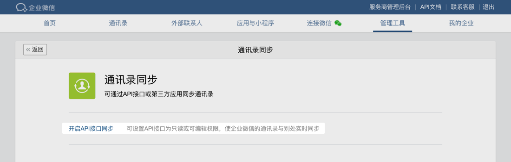
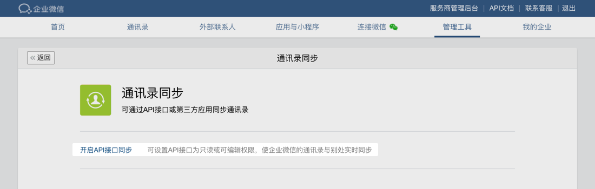
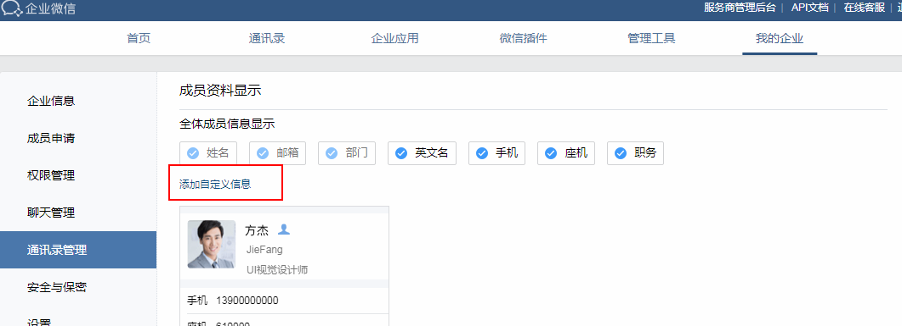
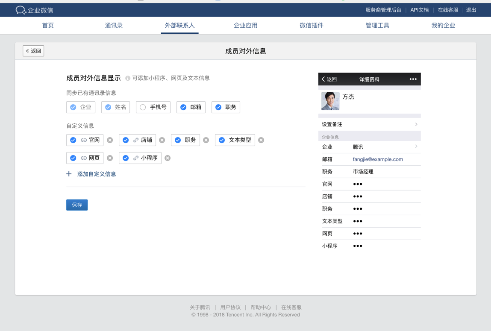

概述
最后更新：2022/10/13
目录
通讯录同步相关接口，可以对部门、成员、标签等通讯录信息进行查询、添加、修改、删除等操作。
开始开发
企业如果需要从自有的系统同步通讯录到企业微信，需要使用 通讯录同步secret。如果企业委托授权第三方服务商将通讯录从其他系统同步到企业微信，则需要企业授权“通讯录编辑授权”给服务商。
自建应用、代开发应用、第三方应用在提供功能时，往往需要获取通讯录，开发者可查阅成员、部门、标签相关的接口说明。注意，自建应用、代开发应用、第三方应用仅能读取通讯录，不能编辑，且仅能读取可见范围内的通讯录。
注：2022年8月15日起，通过“通讯录同步secret”调用接口或接收通讯录变更事件时，将不再返回除ID（userid和部门ID）之外的其他信息，包括但不限于姓名、手机号、部门名等。查看详情
获取通讯录管理secret的方法如下：
1、进入企业微信管理后台，在“管理工具” -- “通讯录同步”开启“API接口同步” 2、开启后，可设置通讯录API的权限：读取或者编辑通讯录
2、开启后，可设置通讯录API的权限：读取或者编辑通讯录
3、配置企业可信IP，仅所配IP可调用通讯录API。（2022年6月20日起，新开启的通讯录同步必须配置企业可信IP。为保证企业数据安全，请配置本企业服务器的IP地址，不允许配置第三方服务商的IP）
4、使用通讯录同步的secret进行开发。点击查看 示例代码
只有管理员才可以看到“管理工具” - “通讯录同步”这个工具，其他分级管理员无操作权限。当企业开启API接口编辑通讯录后，可接收成员变更个人信息的事件。
扩展属性的添加方法
登录管理后台->我的企业->通讯录管理->成员资料显示栏，点击修改按钮，会看到下图所示修改页面，点击“添加自定义信息”按钮，即可添加。

成员对外信息的添加方法
登录管理后台->外部联系人管理->成员对外信息，点击编辑来添加对外成员的属性，支持文本、链接、小程序类型

组织架构信息权限
企业授权安装第三方应用之后，第三方应用仅能获取到可见范围内的组织架构信息，同时无法获取部门的负责人以及成员的直属上级。企业微信提供了一种新的通讯录权限：组织架构信息权限，第三方应用申请了该权限，企业授权之后，第三方应用即拥有了以下几个权限：